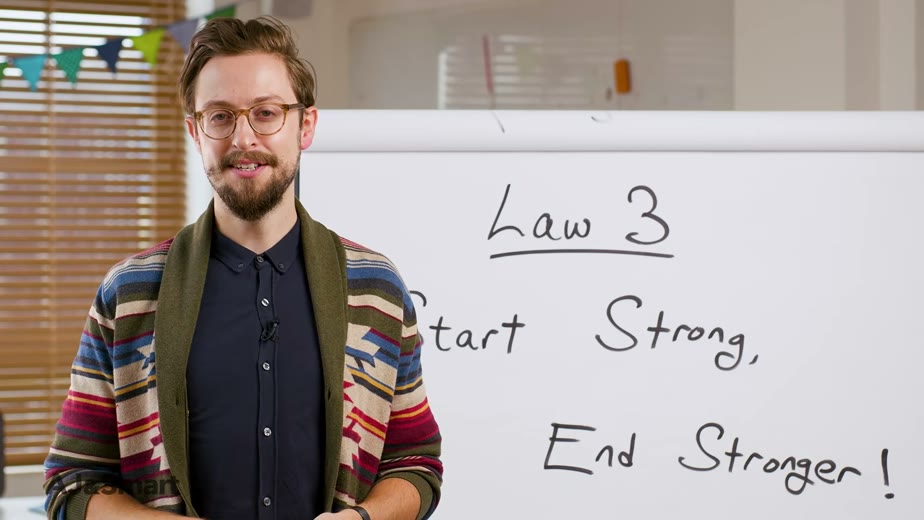
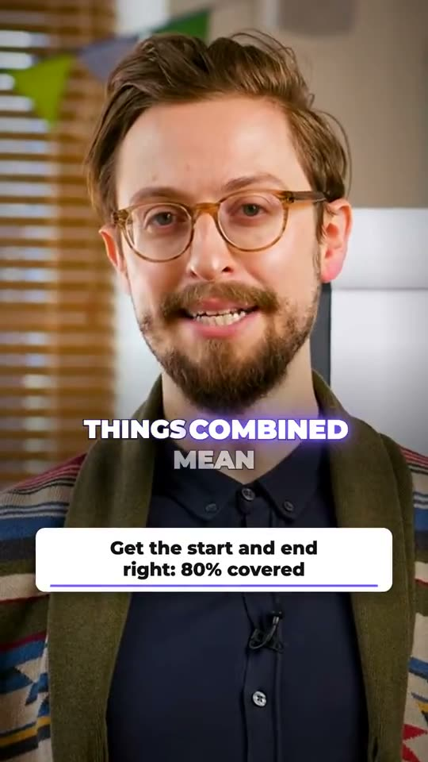

Growth
Most popularFor consistent publishing
$679 / month
- 30 clips per month
- Up to 6 source videos
- Question Map – up to 360 questions
- Priority delivery (usually ≤ 24 h)
We turn your long videos into engaging clips, ready to publish on every platform.
Free sample from your own episode, usually within a few hours. See examples




From “Become A Better Workshop FACILITATOR In 8 Minutes” by AJ&Smart (CC BY). One moment, shown in three of our looks. Tap a clip to play it.
Upload or share a link.
We find the highlights, edit them and adapt them for every platform.
See the result, give feedback and download.
Paste a link and tell us where you post. We reply with a sample clip made from your own content.
The same professional production – choose the volume that suits you.
For consistent publishing
$679 / month
For getting started
$379 / month
For high volume and maximum impact
$979 / month
Billed monthly. Cancel anytime, effective from your next billing date.
Most tools hand you a pile of files and hope. We open each finished clip, watch and listen with software, and write down the result.
13 of 13 checks passed
No calls and no meetings. Everything runs by email and one review page.
A link or a file. That is all we need.
We read the full transcript and choose the strongest openings, in whole sentences.
Captions, framing, sound and hook are added. Every clip is checked.
within 48 hoursLook through the clips on one page and tell us what you want changed. We make the changes and you look again, until you are happy.
Cooking classes, tutorials and interviews: any long video with a voice. Every clip is checked before delivery. Tap a clip to hear it.
Slides and kitchen footage, captions over the voice.
No face on screen, so the screen takes the frame.
Big words, violet glow. From minute 07:50 of the episode.
Sources (all CC BY): “Biscuit Method, Ep. 40” by Culinary Arts Management at Cosumnes River College · “Screen Record Anything with OBS” by Out of Runway · The Emiltech Show.
One 30-second moment from a workshop talk, built in four of our formats. Tap a clip to hear it. You choose what fits your show.
Sample clips: excerpts from “Become A Better Workshop FACILITATOR In 8 Minutes” by AJ&Smart (CC BY).
Four picture formats cover every social network. Every clip is delivered in all four, so you post wherever your audience is. Here are four different videos, one per format. Need another network? If it takes video, we deliver for it.


Most accounts post what they feel like posting. We start from what people actually type into search, and turn your long videos into the answers.
One clear area you want to be known for.
One for each month, a year of content.
Taken from what people type into Google and YouTube.
We look for the moments in your recordings that answer these questions, and cut them. Questions you have not answered yet become topics for your next episodes.
Up to 360 questions to plan a year. Starter includes a 30-question map. Growth and Premium include the full 12-topic map.
You do not choose anything up front. Each clip arrives in a few of these styles, on your own video, so you can see what suits you and keep your favourite. Add your brand colour and every clip matches.


Six of fourteen shown. Also: Editorial, Grow, Lift, Frame, Highlight, Typewriter, Neon and Bounce.
Yes. You send one episode and get a sample clip made from it, so you judge the quality on your own content before paying anything.
A link to the episode or the video file. If you have a brand colour or a caption style you like, tell us. Otherwise we choose for you.
Every clip comes in four picture formats: 9:16, 4:5, 1:1 and 16:9. Together they cover TikTok, Instagram, YouTube, Facebook, LinkedIn, X, Snapchat, Pinterest, Threads and your own website. If a network takes video, we deliver for it.
Not unless you ask. By default you review the finished files and post them yourself. Scheduling on your accounts is part of Premium.
English first. Ask about other languages and we will tell you honestly what we can deliver well.
By card or PayPal. Press the button on a plan and pay on PayPal's secure page, with or without a PayPal account. Work starts when your payment has arrived.
Yes. Podcasters, coaches, consultants and creators use the same process as companies: send a link, get tested clips, review them and ask for changes.
A list of the questions your audience already asks about your topic, taken from what people type into Google and YouTube. Each clip answers one question, so what you post is useful instead of guessed.
Software gives you files. We give you tested clips, picked by someone who reads the whole transcript, plus a report of what worked.
Free sample from your own episode, usually within a few hours. Paste a link and we email you a private page with your clips.
Prefer email? Write to info@cliprauto.com.
Check your inbox at . We just sent you one email with a button to confirm your address. Press it and we start right away.
Ready within 2 hours. No email after 5 minutes? Check spam or write to info@cliprauto.com.